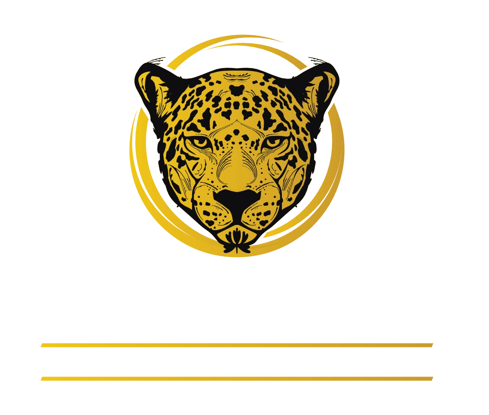

Defesa Criminal Estratégica e Eficiente: Seus Direitos Protegidos com Excelência!
Na Cyrino Advocacia e Consultoria, garantimos uma defesa criminal comprometida, técnica e personalizada. Protegemos seus direitos com ética, transparência e um histórico sólido de sucesso.
Experiência, confiança e estratégia jurídica de alto nível para sua defesa.
Atendimento 100% humanizado, suporte contínuo e total dedicação ao seu caso!